Córtex Estudos · 4º Semestre · Anato Pato II · Aula 03
Patologia do Estômago
Histofisiologia gástrica, leitura de laudo de endoscopia e gastrite aguda — a aula da Profa. Veronica Yujra explicada do zero. Ela avisou: toda patologia gástrica do simpósio nasce da quebra do equilíbrio entre secreção ácida e proteção da mucosa. Esta aula é esse alicerce.
1 · O estômago que a patologia usa: regiões e curvaturas
Por que revisar anatomia numa aula de patologia? Porque cada região gástrica tem morfologia e função diferentes — e isso muda o que você espera ver na endoscopia, no laudo e na lâmina. O estômago é a "área central" do trato gastrointestinal superior: um órgão sacular (sacoliforme) espremido entre duas junções.
- Limite superior: a junção esofagogástrica (JEG) — encontro com o terço distal do esôfago.
- Limite inferior: a junção gastroduodenal (JGD) — encontro com a porção proximal do duodeno, guardada pelo esfíncter pilórico.
- Regiões (microanatomia): cárdia (logo abaixo da JEG) · fundo · corpo · antro · piloro. Na prática, fundo + corpo são tratados como uma região só (muito semelhantes) e antro + piloro como a região antropilórica.
- Curvaturas: menor (medial) e maior (lateral).
🎯 O corte padrão da peça: pela curvatura MAIOR
Na macroscopia patológica, o estômago é aberto pela curvatura maior — a peça fica espalmada "como uma borboleta". Isso é padrão: permite traçar linhas de estudo do fundo até o piloro. A professora mostrou a peça fresca e cobrou na hora: "todo mundo consegue enxergar onde foi feito o corte?". Repare também no pregueado: pregas exuberantes no fundo/corpo, bem menores no antro — isso reaparece na endoscopia.
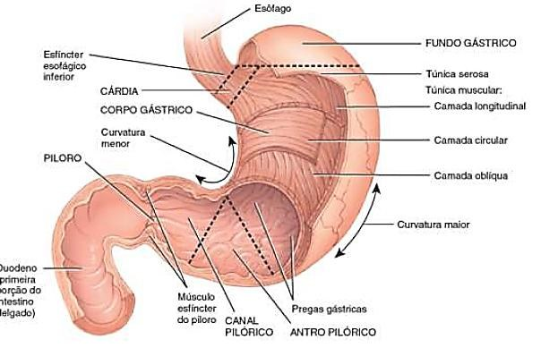
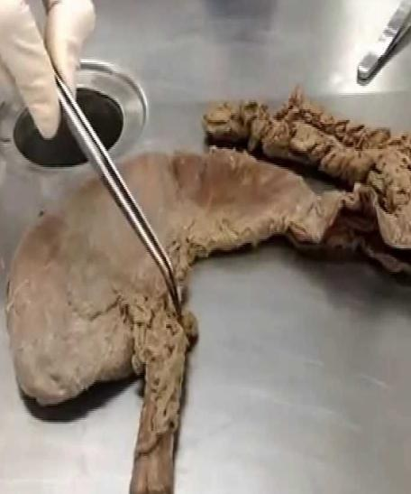
2 · A parede gástrica: 4 túnicas e o "liquidificador" de 3 fibras
Todo o trato gastrointestinal é um tubo com as mesmas quatro paredes — e o estômago não é exceção:
Da luz para fora
- 1Mucosa — epitélio (glandular secretório) + lâmina própria (conjuntivo frouxo, onde estão os vasos) + muscular da mucosa (camada discreta). Tudo o que a aula detalha de histologia está aqui.
- 2Submucosa — tecido conjuntivo aglandular (diferente do esôfago!), às vezes com tecido adiposo.
- 3Muscular própria em TRÊS direções — oblíqua interna + circular média + longitudinal externa. É uma exclusividade mecânica do estômago.
- 4Serosa — revestimento externo com camada submesotelial.
🎯 Por que TRÊS camadas musculares?
"O estômago é o liquidificador do corpo" — literalmente: fibras em três direções permitem girar, comprimir e misturar em todos os sentidos, executando a trituração (digestão mecânica). E, quando o quimo está pronto, a mesma musculatura faz a propulsão pelo esfíncter pilórico. Guarde o par trituração + propulsão.
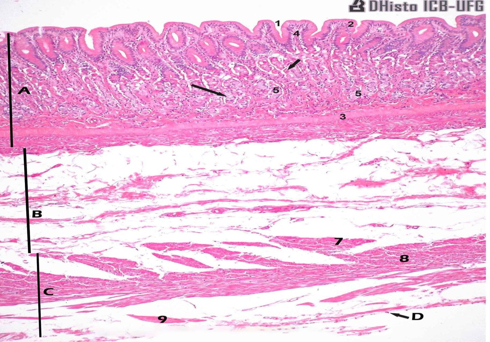
3 · Mucosa em 2 compartimentos: fovéolas × glândulas (corpo × antro)
A mucosa gástrica é um epitélio colunar simples secretório que se dobra. Essas dobras criam dois compartimentos que você PRECISA saber separar na lâmina:
- Compartimento foveolar — as fovéolas (= fossetas, fóveas ou criptas gástricas): a porção superficial, presente em todo o estômago. Células colunares enfileiradas fazendo invaginações; entre elas ficam as células-tronco (células-fonte).
- Compartimento glandular — a porção profunda: glândulas tubulares ramificadas que se emendam na base das fovéolas. É aqui que mora a diferença regional.
| Região | Glândulas | Produto principal |
|---|---|---|
| Cárdia | pequenas glândulas mucosas | mucina (muco) |
| Fundo e corpo | grandes glândulas oxínticas (parietais) e zimogênicas (principais) | HCl e pepsinas |
| Antro e piloro | glândulas mucosas menores + células endócrinas | muco + hormônios (gastrina, somatostatina) |
🎯 Corpo × antro na lâmina — e por que isso aparece no LAUDO
A professora colocou duas fotos lado a lado e perguntou o que mudava: no corpo, glândulas compridas, enfileiradas, densamente arrumadas; no antro, glândulas menores e mais curtas — tão curtas que parecem cortadas no transversal (e não é outro corte!). Consequência prática: todo laudo de biópsia informa a região da amostra, porque a densidade e a organização glandular esperadas mudam. Antes de dizer "isso está alterado", localize-se: de onde veio o fragmento?
⚠️ Quanta lâmina própria dá para ver no normal?
Quase nada — as glândulas ficam "uma do ladinho da outra" e o conjuntivo entre elas é mínimo. Isso importa demais: os vasos estão na lâmina própria, então é POR ELA que chega a inflamação. Se você vê edema separando as glândulas e infiltrado entre elas, o tecido não está normal. É o primeiro olhar de qualquer gastrite.
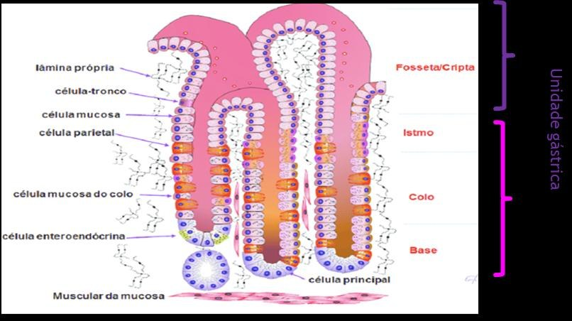
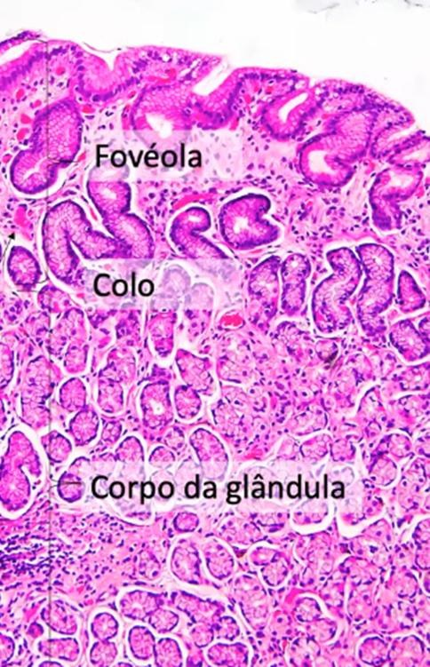
4 · Tipos celulares: quem produz o quê
O elenco da mucosa gástrica
- 1Células mucosas superficiais (foveolares) — produzem muco (sem armazenar como as caliciformes do intestino) e BICARBONATO — o tampão que neutraliza o pH após a digestão.
- 2Células parietais (oxínticas) — eosinofílicas, poligonais, na metade superior/intermediária das glândulas do fundo e corpo. Produzem HCl (via bomba de prótons) e FATOR INTRÍNSECO (glicoproteína obrigatória para absorver vitamina B12).
- 3Células principais (zimogênicas) — basofílicas, na base das glândulas. Produzem pepsinogênios I e II (→ pepsina ativa = digestão química de proteínas) e lipase gástrica.
- 4Células endócrinas — dispersas. No antro: células G → GASTRINA (liga a digestão). No corpo/fundo: células produtoras de HISTAMINA (vasodilatação da digestão). Células D (delta), principalmente no antro: SOMATOSTATINA (desliga a digestão).
- 5Células-tronco ("células-fonte") — na entrada das glândulas (istmo/colo). Sustentam um turnover altíssimo: o epitélio gástrico se renova em dias — no máximo ~1 semana.
🎯 A ponte clínica que ela martelou: oxíntica destruída = anemia perniciosa
Existe gastrite que destrói as células oxínticas (vocês verão no simpósio — a autoimune). O paciente perde o HCl e também o fator intrínseco. Resultado: não absorve B12 — "posso tomar quilos de vitamina B12 que não vai funcionar" — e evolui com anemia perniciosa. É por isso que fator intrínseco aparece nesta aula.
🎯 MALT: linfócito residente SIM, neutrófilo residente NÃO
A mucosa gástrica tem MALT (tecido linfoide associado à mucosa): linfócitos residentes são normais — achar linfócito não assusta ninguém. Mas neutrófilo residente NÃO existe (vivem horas). Logo, neutrófilo na mucosa gástrica = doença ATIVA — é ele que faz o laudo dizer "gastrite ativa". Essa é A pergunta de prova desta aula.
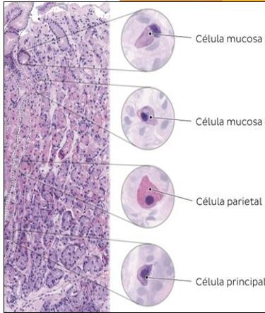
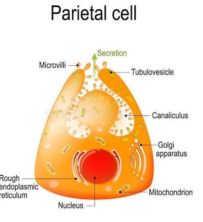
5 · Fisiologia da secreção ácida: as 3 fases (liga e desliga)
A função primordial do estômago é formar o quimo pela digestão mecânica + química. A secreção ácida é regulada em três fases — e entender o "liga/desliga" é entender por que a mucosa não se destrói todos os dias:
Liga → potencializa → desliga
- 1Fase CEFÁLICA (pré-prandial) — paladar, olfato, mastigação, deglutição (o "cheirinho da comida subindo a escada"). Atividade vagal → acetilcolina (ACh) estimula a célula parietal (↑Ca²⁺ citosólico) → ativa a bomba de prótons. A acidez gástrica chega a 3 MILHÕES de vezes mais H⁺ que o sangue.
- 2Fase GÁSTRICA (prandial) — o alimento chegou: estimulação mecânica (trituração) + liberação de GASTRINA (células G do antro) → ativa receptores da parietal → mais bombas de prótons.
- 3Fase INTESTINAL (pós-prandial) — o quimo passou pelo esfíncter pilórico; proteínas digeridas chegam ao delgado proximal. Começa a INIBIÇÃO dos estímulos gástricos: células D → SOMATOSTATINA desliga o aparelho; as células superficiais secretam bicarbonato e o pH volta a ~7 até a próxima refeição.
🔗 Conexão com o estilo de vida
O desenho fisiológico prevê pH baixo durante a digestão e alto durante o descanso. O cafezinho, o refrigerante e o beliscar constante 20 minutos após o almoço desregulam esses ciclos — a mucosa fica exposta ao ácido por mais tempo do que o mecanismo de proteção foi feito para aguentar. É o pano de fundo de muita "gastrite" do mundo real.
6 · Mecanismos de proteção da mucosa — a chave do simpósio
🎯 "Para QUALQUER patologia gástrica, houve quebra dessas barreiras"
A professora chamou este esquema de chave do simpósio: a homeostase gástrica é o equilíbrio entre estímulos de secreção ácida e mecanismos de proteção, sob injúria constante (há ácido na cavidade o tempo todo). Toda doença que vocês apresentarem começa com a quebra de um destes quatro mecanismos:
As 4 linhas de defesa
- 1Barreira epitelial — muco das células superficiais + junções intercelulares muito fortes (células justapostas: nada de HCl entrando entre elas) + alto turnover garantido pelas células-tronco (nunca falta população celular).
- 2Neutralização do pH — após o esvaziamento, as células epiteliais superficiais secretam bicarbonato e o pH sobe para perto de 7.
- 3Vascularização e fluxo sanguíneo — a histamina vasodilata; o alto fluxo traz O₂, íons e nutrientes para a trituração/digestão e, ao final, faz a difusão retrógrada: retira H⁺ da mucosa, ajudando o pH a subir.
- 4Prostaglandinas — produzidas pelas células mucosas; inibem o HCl, vasodilatam e aumentam o tônus muscular (esvaziamento). Sim, prostaglandina é mediador inflamatório — e AO MESMO TEMPO essencial à proteção gástrica. Conceitos da Pato I podem ser ambíguos na clínica.
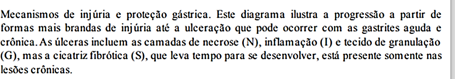
7 · Farmacologia aplicada: IBP, AINEs e as "canetas"
Inibidor de bomba de prótons (omeprazol, pantoprazol…)
- Bloqueia o fluxo de íons da bomba de prótons da célula parietal — a célula não é destruída, apenas impedida de secretar H⁺ (diferente da doença que destrói a oxíntica!).
- Sem HCl, a gastrina continua tentando estimular uma parietal bloqueada → HIPERGASTRINEMIA (dosável no sangue) no uso crônico.
- Com indicação e por tempo definido, ótimo. "Porque o vizinho toma e diz que é bom" = uso sem indicação que prejudica a digestão.
AINEs (anti-inflamatórios não esteroidais)
- Inibem a COX-1, uma das principais vias de produção de prostaglandinas.
- Menos prostaglandina = menos dor, mas também menos proteção gástrica e digestão ineficiente — o elo direto entre "ibuprofeno da bolsa" e gastrite/gastropatia.
As "canetas" (análogos de GLP-1)
- Lentificam a movimentação gástrica e o esvaziamento e reduzem a acidez/bombas ativas — ação local no TGI e componente central (saciedade).
- Sob prescrição, é o mecanismo de controle do apetite; a mesma lentidão sem medicamento seria dispepsia (digestão ineficiente). Relatos de plenitude e digestão "parada" são esperados.
8 · Gastropatia × gastrite
GASTROPATIA = termo genérico para disfunções gástricas SEM confirmação histológica. GASTRITE = processo com história da doença e confirmação por biópsia da atividade inflamatória.
Por isso a gastrite aguda aparece em muitos livros como "gastropatia ativa": quase nunca se biopsia um quadro agudo autolimitado — deduz-se clinicamente. "Ativa", você já sabe, aponta para neutrófilos. Guarde os dois nomes: os laudos e os livros alternam entre eles.
9 · EDA: lendo o laudo endoscópico (com urease e H. pylori)
O exame do trato digestório superior é a EDA — esofagogastroduodenoscopia. A professora fez questão de treinar a turma a ler laudo com olhos de patologia:
- Padronização de imagens: desde 2001 a sociedade europeia propõe 8 imagens dos pontos anatômicos principais; em 2020, a World Endoscopy Organization publicou recomendação de 28 imagens para o exame normal (mais, se houver achados).
- "Boa distensibilidade à insuflação de ar": a mucosa é pregueada — insufla-se ar para estender as pregas e enxergar a mucosa lisa (daí o desconforto pós-exame).
- "Disposição do pregueado sem alterações": cada região tem seu pregueado; liso onde deveria ser pregueado = suspeita de ATROFIA.
- "Lago bilioso de aspecto claro": o resíduo gástrico deve ser transparente, sem restos alimentares nem sangue.
- "Retrovisão revela cárdia com boa tonicidade": a cânula entra no estômago e faz uma curva para olhar de dentro para o esôfago — é assim que se avalia a cárdia/JEG.
- "Hiperemia leve em fundo, corpo e antro, uniforme": o órgão quase todo acometido = PANGASTRITE (pan- = panorâmica do dentista: pegou tudo). Conclusão do laudo: pangastrite enantematosa leve.
🎯 O teste que virou rotina: UREASE
Durante a endoscopia, hoje é praxe fazer o teste da urease — o método mais barato, que entrou na rotina (não é o único). Urease positiva → Helicobacter pylori positivo. No exemplo da aula, o laudo trazia: "teste de urease para pesquisa de H. pylori que resultou POSITIVO". Quem apresentar gastrite crônica no simpósio vai explicar como o teste funciona.
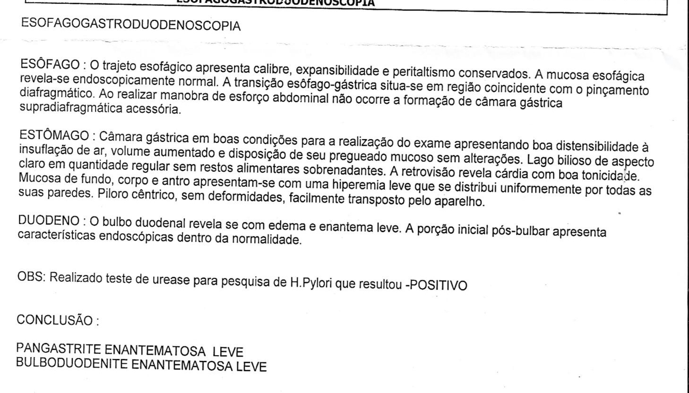
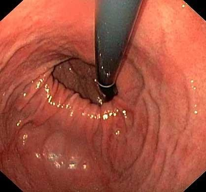
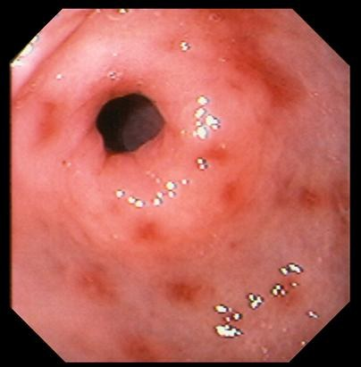
10 · Gastrite aguda: etiologias, macro e micro
GASTRITE AGUDA (gastropatia ativa) = processo inflamatório agudo, transitório e autolimitante da mucosa gástrica. Patogênese: consequência do rompimento dos mecanismos citoprotetores da mucosa (item 6). Quem já teve? "Todo mundo, né?"
Principais agentes etiológicos
- AINEs (↓prostaglandinas) e ingestão de ácidos e bases;
- Álcool e fumo;
- Estresse sistêmico AGUDO — desafio sistêmico, não "nervoso": o grande queimado/politraumatizado desvia fluxo sanguíneo para a lesão → isquemia transitória da mucosa → atrofia e gastrite temporárias;
- Trauma mecânico — o exemplo que todo mundo esquece: a SONDA NASOGÁSTRICA. Enquanto durar a sonda, espera-se gastrite naquele paciente;
- Quimioterapia e radioterapia localizada — matam células de divisão rápida → renovação epitelial ineficiente;
- Senescência — envelhecer reduz produção de mucina/bicarbonato e o metabolismo celular: os mecanismos de proteção decaem.
⚠️ "Gastrite nervosa" NÃO é entidade patológica
A professora foi pesquisar depois que perguntaram: o que se chama popularmente de gastrite nervosa é dispepsia por alteração do parassimpático (digestão ineficiente) — não há gastrite "nervosa" como diagnóstico anatomopatológico. Estresse que causa gastrite aguda é o sistêmico (queimadura, trauma, choque), não o emocional.
Aspecto clínico / macroscopia
- Hiperemia em pontos avermelhados = ENANTEMAS (mucosa interna; na pele = exantema);
- Erosões = perda PARCIAL do epitélio (úlcera = perda total — a diferenciação completa vem no simpósio);
- Pequenos sangramentos localizados; possível atrofia + edema visíveis (pregas somem) — e a atrofia aparece rápido justamente porque o turnover é de dias.
Microscopia
- Alterações sutis até pequenas erosões superficiais; arquitetura glandular tubular PRESERVADA; pode haver hiperplasia foveolar;
- Lâmina própria com edema moderado e congestão vascular (vasos dilatados e congestos);
- Infiltrado NEUTROFÍLICO entre as células epiteliais (intraepitelial) e nas glândulas — PMN = agudo = doença ativa. Linfócitos podem aparecer junto (MALT), mas quem carimba "aguda/ativa" é o neutrófilo.
Tratamento
- Remover o estímulo nocivo (o fator etiológico) — respondem rapidamente;
- IBP por período curto para favorecer a cicatrização;
- É autolimitante. EDA e biópsia ficam para casos recidivantes. (Gastrite crônica é outra doença, com outro tratamento — simpósio.)
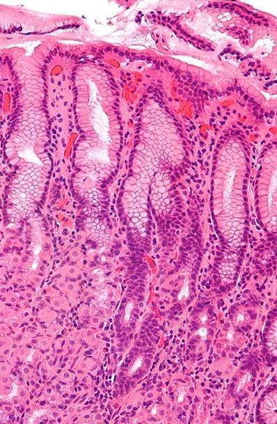
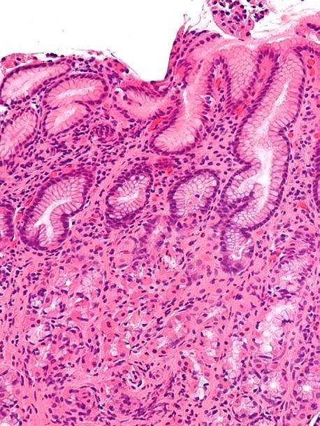
11 · Lâminas teórico-práticas + o que vem no simpósio
Lâmina 24 (caixa clara) — Gastrite crônica
- Mucosa gástrica de tipo pilórica hiperplasiada;
- Infiltrado inflamatório MISTO com neutrófilos na lâmina própria, permeando o epitélio glandular até a muscular da mucosa;
- Segmentos glandulares com áreas de METAPLASIA INTESTINAL;
- Lâmina própria com edema, vasodilatação e congestão.
Lâmina 18 (caixa clara) — Úlcera gástrica
- Mucosa de tipo fúndica com DESCONTINUIDADE do revestimento (perda total = úlcera);
- Superfície sero-fibrinosa com áreas de hemorragia;
- Tecido de granulação subjacente com angiogênese e infiltrado inflamatório misto.
🔗 O mapa do simpósio (o que vocês vão apresentar)
Inflamatórias: gastrites crônicas · úlcera péptica · pólipos hiperplásicos inflamatórios. Neoplásicas benignas e malignas: TEGI/GIST (tumor estromal gastrointestinal) · adenocarcinomas dos tipos intestinal e difuso. Base bibliográfica: capítulos de TGI (13/17) e 22. Toda apresentação deve amarrar a doença à quebra dos mecanismos de proteção — a régua desta aula.
✅ Resumo rápido da aula
- Anatomia: órgão sacular entre JEG e JGD; cárdia · fundo · corpo · antro · piloro (fundo+corpo juntos; antro+piloro = antropilórica); peça aberta pela curvatura MAIOR ("borboleta"); pregas grandes no corpo, menores no antro.
- Parede: mucosa (epitélio + lâmina própria + muscular da mucosa) · submucosa aglandular · muscular em 3 direções (trituração + propulsão) · serosa.
- Mucosa: compartimento foveolar (todo o estômago) × glandular (regional): cárdia = muco; fundo/corpo = oxínticas + zimogênicas (HCl + pepsina); antro = mucosas menores + endócrinas. Laudo sempre diz a região da amostra.
- Células: superficiais = muco + bicarbonato; parietais = HCl + fator intrínseco (destruição → anemia perniciosa); principais = pepsinogênios + lipase; G = gastrina (liga); corpo/fundo = histamina; D = somatostatina (desliga); células-tronco = renovação em dias.
- MALT: linfócito residente É normal; neutrófilo residente NÃO existe → neutrófilo = gastrite ATIVA.
- 3 fases: cefálica (vagal/ACh) → gástrica (gastrina) → intestinal (somatostatina desliga + bicarbonato neutraliza). Acidez até 3 milhões × o H⁺ do sangue.
- 4 proteções: barreira epitelial (muco + junções + turnover) · bicarbonato · vascularização (histamina, difusão retrógrada) · prostaglandinas. AINEs cortam COX-1→prostaglandina; IBP bloqueia a bomba → hipergastrinemia.
- Gastropatia = sem confirmação histológica; gastrite = com biópsia. EDA: insuflação/distensibilidade, pregueado (liso = atrofia?), lago bilioso claro, retrovisão (cárdia), pangastrite = órgão todo; urease + → H. pylori.
- Gastrite aguda: transitória/autolimitante; quebra da citoproteção; etiologias: AINEs, ácidos/bases, álcool, fumo, estresse sistêmico (queimado), sonda nasogástrica, quimio/radio, senescência. Macro: enantemas, erosões (perda PARCIAL), sangramentos. Micro: neutrófilos + edema + congestão, arquitetura preservada. Tratamento: tirar a causa + IBP curto. "Gastrite nervosa" não existe (é dispepsia).
- Práticas: Lâmina 24 = gastrite crônica (infiltrado misto + metaplasia intestinal); Lâmina 18 = úlcera (descontinuidade + sero-fibrina + tecido de granulação).
🧫 Resumão Pré-Prova — Patologia do Estômago
Revisão da véspera · Anato Pato II · Aula 03 (Profa. Veronica Yujra) · só o que foi enfatizado
- Órgão sacular entre JEG (esôfago distal) e JGD (duodeno/esfíncter pilórico).
- Regiões: cárdia · fundo · corpo · antro · piloro — fundo+corpo viram uma região só; antro+piloro = antropilórica.
- Corte padrão da peça: curvatura MAIOR ("borboleta") — linhas de estudo do fundo ao piloro.
- Pregas: exuberantes no fundo/corpo; antro é naturalmente mais liso.
- Parede: mucosa · submucosa aglandular · muscular em 3 direções (oblíqua int. + circular média + longitudinal ext. = "liquidificador": trituração + propulsão) · serosa.
- Mucosa = epitélio colunar simples secretório + lâmina própria + muscular da mucosa.
- 2 compartimentos: FOVEOLAR (fossetas/criptas — todo o estômago) × GLANDULAR (regional).
| Região | Glândulas | Produto |
|---|---|---|
| Cárdia | pequenas, mucosas | muco |
| Fundo/Corpo | grandes oxínticas + zimogênicas | HCl + pepsinas |
| Antro/Piloro | mucosas menores + endócrinas | muco + hormônios |
- Corpo: glândulas compridas, enfileiradas · Antro: glândulas curtas (parecem corte transversal). O laudo sempre diz a região da amostra — localize-se antes de chamar de alterado.
- Lâmina própria normal = mínima; os vasos estão nela → inflamação chega POR ela (edema separa glândulas).
| Célula | Onde | Produz |
|---|---|---|
| Mucosa superficial (foveolar) | superfície | muco + BICARBONATO |
| Parietal (oxíntica) | eosinofílica; metade sup. das glând. fundo/corpo | HCl (bomba de prótons) + FATOR INTRÍNSECO |
| Principal (zimogênica) | basofílica; base das glândulas | pepsinogênios I/II + lipase gástrica |
| G (endócrina) | antro | gastrina (LIGA) |
| Endócrinas corpo/fundo | corpo/fundo | histamina |
| D (delta) | principalmente antro | somatostatina (DESLIGA) |
| Células-tronco (fonte) | istmo/colo da glândula | renovação em dias (≤1 sem) |
- 1 · Cefálica (pré-prandial): olfato/paladar/mastigação → vago/ACh → parietal (↑Ca²⁺) → bomba de prótons. Acidez 3 milhões× o H⁺ do sangue.
- 2 · Gástrica (prandial): trituração mecânica + GASTRINA (cél. G) → mais bombas ativas.
- 3 · Intestinal (pós-prandial): quimo no delgado → SOMATOSTATINA (cél. D) desliga + bicarbonato neutraliza (pH→~7 até a próxima refeição).
- 1 · Barreira epitelial: muco + junções intercelulares fortes + alto turnover (células-tronco).
- 2 · Neutralização do pH: bicarbonato das células superficiais após o esvaziamento.
- 3 · Vascularização/fluxo: histamina vasodilata; traz O₂/nutrientes; difusão retrógrada retira H⁺.
- 4 · Prostaglandinas: inibem HCl + vasodilatam + ↑tônus/esvaziamento (mediador inflamatório QUE protege).
- EDA = esofagogastroduodenoscopia. Padronização: 2001 = 8 imagens (soc. europeia) → 2020 = 28 imagens (World Endoscopy Organization).
- Distensibilidade à insuflação: insufla-se ar p/ estender as pregas e ver a mucosa.
- Pregueado: liso onde devia ser pregueado → pensar ATROFIA (e/ou edema).
- Lago bilioso claro: resíduo transparente, sem restos/sangue.
- Retrovisão: a cânula faz a curva DENTRO do estômago p/ olhar a cárdia/JEG → "cárdia com boa tonicidade".
- PANGASTRITE: hiperemia uniforme em fundo+corpo+antro = órgão (quase) todo. Conclusão do laudo da aula: pangastrite enantematosa leve.
- Teste da UREASE na endoscopia (o mais barato, rotina): positivo → H. pylori.
- Inflamação aguda, transitória, AUTOLIMITANTE. Patogênese = rompimento dos mecanismos citoprotetores.
- Etiologias: AINEs · ácidos/bases · álcool · fumo · estresse sistêmico agudo (queimado → isquemia transitória) · SONDA nasogástrica (trauma mecânico que todos esquecem) · quimio/RxT localizada (renovação ineficiente) · senescência (↓mucina/bicarbonato).
- Macro: hiperemia = ENANTEMAS · erosões (perda PARCIAL) · pequenos sangramentos · atrofia+edema (pregas somem rápido pois turnover é de dias).
- Micro: NEUTRÓFILOS intraepiteliais e no córion · edema + congestão vascular na lâmina própria · arquitetura glandular preservada · possível hiperplasia foveolar.
- Tratamento: remover o fator etiológico + IBP por período curto. Biópsia/EDA só em recidivantes. Crônica = outra doença.
| Lâmina | Diagnóstico | Marcas |
|---|---|---|
| 24 (caixa clara) | Gastrite crônica | mucosa pilórica hiperplasiada · infiltrado misto c/ neutrófilos até a muscular da mucosa · METAPLASIA INTESTINAL · edema+congestão |
| 18 (caixa clara) | Úlcera gástrica | mucosa fúndica c/ descontinuidade · superfície sero-fibrinosa + hemorragia · tecido de granulação c/ angiogênese |
- "Neutrófilo na mucosa gástrica" → doença ATIVA (aguda).
- "Grande queimado com dor epigástrica" → gastrite aguda por estresse sistêmico.
- "Paciente com sonda nasogástrica" → gastrite esperada (trauma mecânico).
- "Liso onde devia ter prega" → atrofia.
- "Hiperemia uniforme fundo+corpo+antro" → pangastrite.
- "Urease positiva" → H. pylori.
- "Uso crônico de IBP + gastrina alta" → hipergastrinemia por bloqueio da bomba.
- "Destruição de oxínticas + anemia" → sem fator intrínseco → perniciosa.
- Gastropatia × gastrite: sem confirmação histológica × confirmada por biópsia.
- Erosão × úlcera: perda PARCIAL do epitélio × perda TOTAL (descontinuidade).
- Enantema × exantema: hiperemia em MUCOSA interna × na PELE.
- Linfócito × neutrófilo na mucosa: residente do MALT (normal) × sempre patológico (ativa).
- Estresse sistêmico × "gastrite nervosa": queimado/trauma (existe) × NÃO é entidade patológica (é dispepsia).
- Gastrina × somatostatina: liga (cél. G, antro) × desliga (cél. D).
- Parietal × principal: eosinofílica, HCl+fator intrínseco × basofílica, pepsinogênio+lipase.
- IBP × doença autoimune: bloqueia a bomba (célula intacta) × destrói a oxíntica.
Banco de Questões — Patologia do Estômago
Anato Pato II · Aula 03 · estilo ENADE/residência.